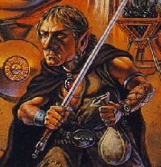

DUERGAR

With the recent excavations unearthing paths to the Underdark, the race of
dark dwarves known as Duergar has made its way into Muddy. Like their
surface cousins they are strong, though their evil ways have changed them
in other areas. Unlike their cousins, they are not known for working stone
and metal, something which has made them less hearty over time. They have
become more dexterous through centuries of thievery and deceit. All Duergar
are evil.
The base exp for Duergars:
Witch = 1250 Cleric = 1250 Thief = 1250 Warrior = 1250
AntiPaladin = 1550 Necromanser = 1550